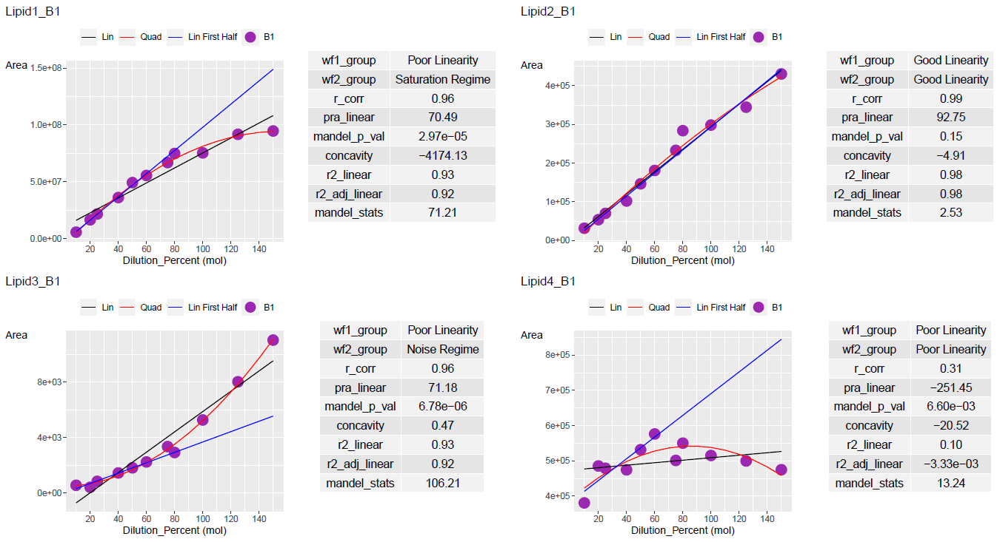
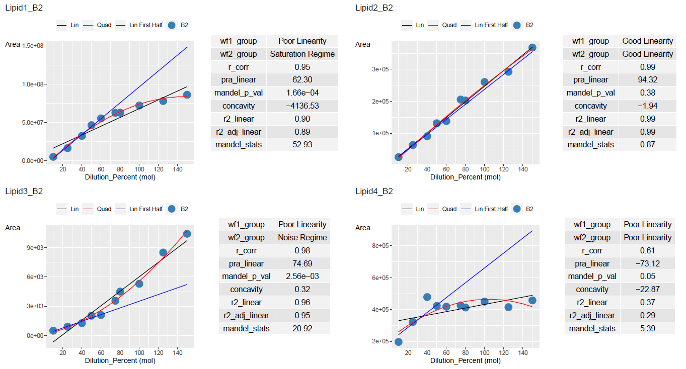

Here are some examples to plot dilution data via ggplot2
library(DCVtestkit)
# Data Creation
dilution_percent <- c(10, 20, 25, 40, 50, 60,
75, 80, 100, 125, 150,
10, 25, 40, 50, 60,
75, 80, 100, 125, 150)
dilution_batch <- c("B1", "B1", "B1", "B1", "B1",
"B1", "B1", "B1", "B1", "B1", "B1",
"B2", "B2", "B2", "B2", "B2",
"B2", "B2", "B2", "B2", "B2")
sample_name <- c("Sample_010a", "Sample_020a",
"Sample_025a", "Sample_040a", "Sample_050a",
"Sample_060a", "Sample_075a", "Sample_080a",
"Sample_100a", "Sample_125a", "Sample_150a",
"Sample_010b", "Sample_025b",
"Sample_040b", "Sample_050b", "Sample_060b",
"Sample_075b", "Sample_080b", "Sample_100b",
"Sample_125b", "Sample_150b")
lipid1_area_saturated <- c(5748124, 16616414, 21702718, 36191617,
49324541, 55618266, 66947588, 74964771,
75438063, 91770737, 94692060,
5192648, 16594991, 32507833, 46499896,
55388856, 62505210, 62778078, 72158161,
78044338, 86158414)
lipid2_area_linear <- c(31538, 53709, 69990, 101977, 146436, 180960,
232881, 283780, 298289, 344519, 430432,
25463, 63387, 90624, 131274, 138069,
205353, 202407, 260205, 292257, 367924)
lipid3_area_lod <- c(544, 397, 829, 1437, 1808, 2231,
3343, 2915, 5268, 8031, 11045,
500, 903, 1267, 2031, 2100,
3563, 4500, 5300, 8500, 10430)
lipid4_area_nonlinear <- c(380519, 485372, 478770, 474467, 531640, 576301,
501068, 550201, 515110, 499543, 474745,
197417, 322846, 478398, 423174, 418577,
426089, 413292, 450190, 415309, 457618)
dilution_annot <- tibble::tibble(Sample_Name = sample_name,
Dilution_Batch = dilution_batch,
Dilution_Percent = dilution_percent)
lipid_data <- tibble::tibble(Sample_Name = sample_name,
Lipid1 = lipid1_area_saturated,
Lipid2 = lipid2_area_linear,
Lipid3 = lipid3_area_lod,
Lipid4 = lipid4_area_nonlinear)
dilution_table <- create_dilution_table(dilution_annot,
lipid_data,
common_column = "Sample_Name",
signal_var = "Area",
column_group = "Transition_Name"
)
dilution_classified <- dilution_table %>%
summarise_dilution_table(grouping_variable = c("Transition_Name",
"Dilution_Batch"),
conc_var = "Dilution_Percent",
signal_var = "Area"
) %>%
dplyr::arrange(.data$Transition_Name) %>%
evaluate_linearity(grouping_variable = c("Transition_Name",
"Dilution_Batch"))
Here is the output of dilution_table and dilution_classified
print(head(dilution_table), width = 100)
#> # A tibble: 6 x 5
#> Sample_Name Dilution_Batch Dilution_Percent Transition_Name Area
#> <chr> <chr> <dbl> <chr> <dbl>
#> 1 Sample_010a B1 10 Lipid1 5748124
#> 2 Sample_010a B1 10 Lipid2 31538
#> 3 Sample_010a B1 10 Lipid3 544
#> 4 Sample_010a B1 10 Lipid4 380519
#> 5 Sample_020a B1 20 Lipid1 16616414
#> 6 Sample_020a B1 20 Lipid2 53709
print(head(dilution_classified), width = 100)
#> # A tibble: 6 x 11
#> Transition_Name Dilution_Batch wf1_group wf2_group r_corr pra_linear
#> <chr> <chr> <chr> <chr> <dbl> <dbl>
#> 1 Lipid1 B1 Poor Linearity Saturation 0.963 70.5
#> 2 Lipid1 B2 Poor Linearity Saturation 0.950 62.3
#> 3 Lipid2 B1 Good Linearity Good Linearity 0.990 92.8
#> 4 Lipid2 B2 Good Linearity Good Linearity 0.995 94.3
#> 5 Lipid3 B1 Poor Linearity LOD 0.964 71.2
#> 6 Lipid3 B2 Poor Linearity LOD 0.978 74.7
#> mandel_p_val concavity r2_linear r2_adj_linear mandel_stats
#> <dbl> <dbl> <dbl> <dbl> <dbl>
#> 1 0.0000297 -4174. 0.928 0.920 71.2
#> 2 0.000166 -4137. 0.903 0.890 52.9
#> 3 0.150 -4.91 0.980 0.978 2.53
#> 4 0.382 -1.94 0.990 0.988 0.868
#> 5 0.00000678 0.468 0.930 0.922 106.
#> 6 0.00256 0.321 0.956 0.951 20.9We then create the ggplot plots with dilution_table and dilution_classified
ggplot_table_orig <- add_ggplot_panel(dilution_table,
dilution_summary = dilution_classified,
grouping_variable = c("Transition_Name",
"Dilution_Batch"),
dil_batch_var = "Dilution_Batch",
dil_batch_col = c("#377eb8",
"#4daf4a"),
conc_var = "Dilution_Percent",
conc_var_units = "%",
conc_var_interval = 50,
signal_var = "Area",
plot_half_lin_reg = FALSE) %>%
convert_to_cog(cog_df = NULL,
grouping_variable = c("Transition_Name",
"Dilution_Batch"),
panel_variable = "panel",
col_name_vec = "col_name_vec",
desc_vec = "desc_vec",
type_vec = "type_vec")
# Get the list of ggplot list for each group
ggplot_list_orig <- ggplot_table_orig$panelEach ggplot plot for each group can be found in the column panel
ggplot_list_orig[[1]]
ggplot_list_orig[[7]]
To see the regression line on half the dilution points, set plot_half_lin_reg = TRUE
ggplot_table <- add_ggplot_panel(dilution_table,
dilution_summary = dilution_classified,
grouping_variable = c("Transition_Name",
"Dilution_Batch"),
dil_batch_var = "Dilution_Batch",
dil_batch_col = c("#377eb8",
"#4daf4a"),
conc_var = "Dilution_Percent",
conc_var_units = "%",
conc_var_interval = 50,
signal_var = "Area",
plot_half_lin_reg = TRUE)
ggplot_list <- ggplot_table$panel
ggplot_list[[1]]
ggplot_list[[7]]
Units of conc_var and conc_var_interval can be customised to suit the range of conc_var You can also change the colours for your dilution batch from dil_batch_col
ggplot_table <- add_ggplot_panel(dilution_table,
dilution_summary = dilution_classified,
grouping_variable = c("Transition_Name",
"Dilution_Batch"),
dil_batch_var = "Dilution_Batch",
dil_batch_col = c("#9C27B0",
"#377eb8"),
conc_var = "Dilution_Percent",
conc_var_units = "mol",
conc_var_interval = 20,
signal_var = "Area",
plot_half_lin_reg = TRUE)
ggplot_list <- ggplot_table$panel
ggplot_list[[2]]
ggplot_list[[8]]
The list of ggplots can be output in pdf. You may have to adjust the width and height accordingly.
view_ggplot_pdf(ggplot_list_orig,
filename = "dilution_plot.pdf",
ncol_per_page = 2,
nrow_per_page = 2,
width = 15, height = 8)Page 1

Page 2
